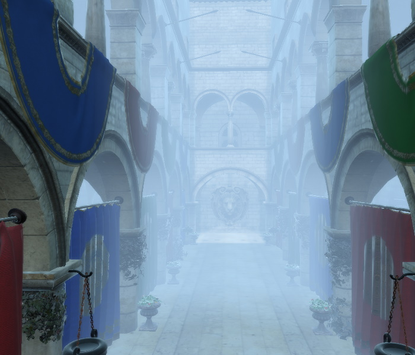
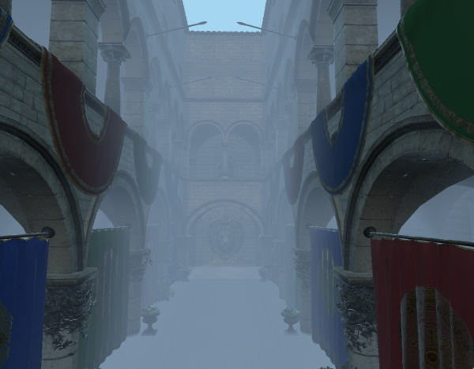
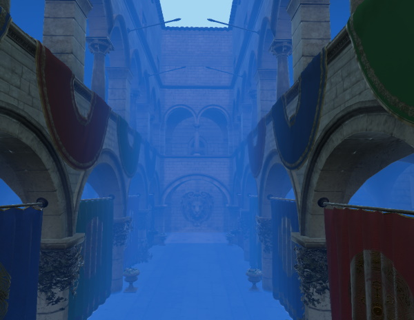
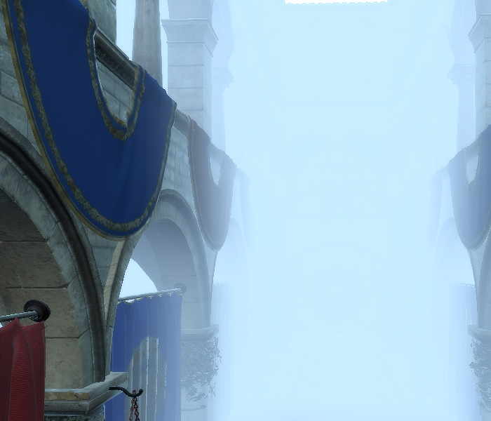
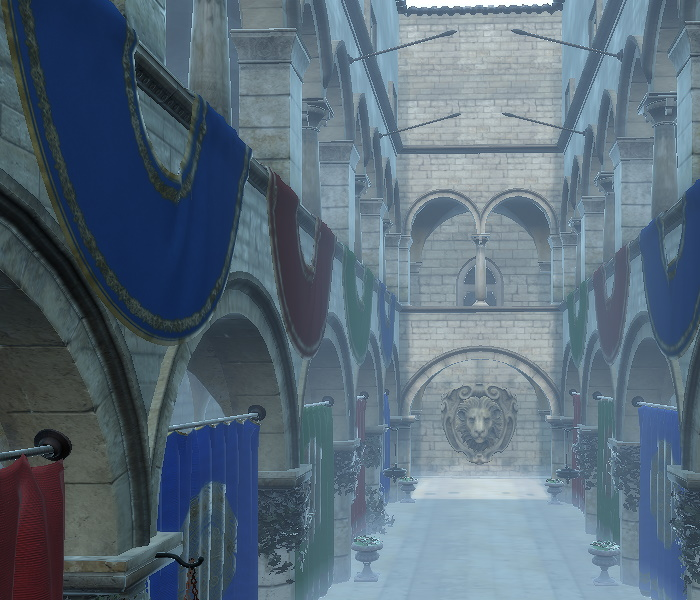
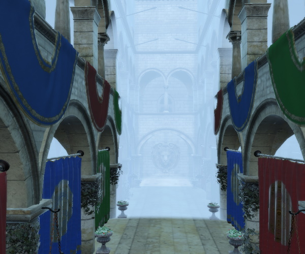
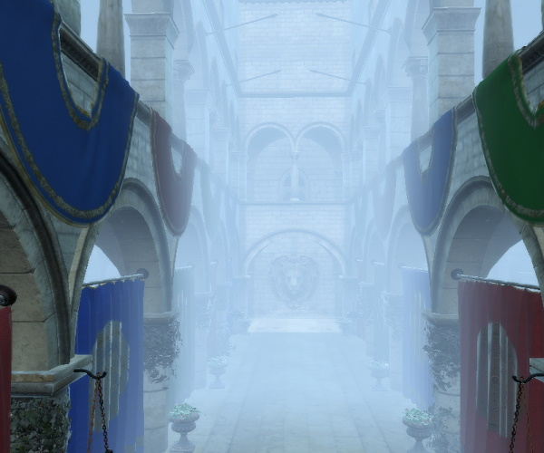
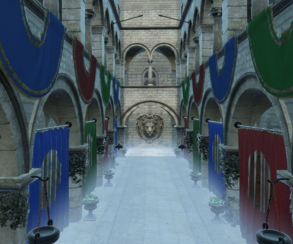
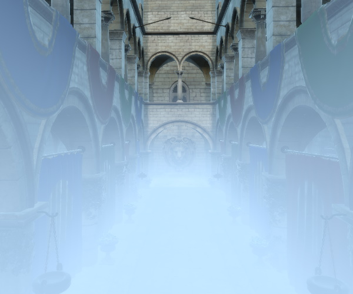

Fog QML Type
Specifies fog settings for a scene. More...
| Import Statement: | import QtQuick3D |
| Since: | Qt 6.5 |
Properties
- color : color
- density : float
- depthCurve : float
- depthEnabled : bool
- depthFar : float
- depthNear : float
- enabled : bool
- heightCurve : float
- heightEnabled : bool
- leastIntenseY : float
- mostIntenseY : float
- transmitCurve : float
- transmitEnabled : bool
Detailed Description
When the fog property of a SceneEnvironment is set to a valid Fog object, the properties are used to configure the rendering of fog.

The simple fog provided by this type is implemented by the materials. It is not a post-processing effect, meaning it does not involve additional render passes processing the texture with the output of the View3D, but is rather implemented in the fragment shader for each renderable object (submesh of Model) with a PrincipledMaterial or shaded CustomMaterial.
Fog is configured by a number of properties:
- General settings: color and density
- Depth fog settings: depthEnabled, depthNear, depthFar, depthCurve
- Height fog settings: heightEnabled, leastIntenseY, mostIntenseY, heightCurve
- Color transmission settings: transmitEnabled, transmitCurve
For example, the following snippet enables depth (but not height) fog using the default fog parameters:
environment: SceneEnvironment {
backgroundMode: SceneEnvironment.Color
clearColor: theFog.color
fog: Fog {
id: theFog
enabled: true
depthEnabled: true
}
}
Instead of defining the Fog object inline, it is also possible to reference a Fog object by id. And since ExtendedSceneEnvironment inherits everything from its parent type SceneEnvironment, fog can be used with ExtendedSceneEnvironment as well:
Fog {
id: theFog
enabled: true
depthEnabled: true
}
environment: ExtendedSceneEnvironment {
fog: theFog
}
See also Qt Quick 3D - Simple Fog Example and Qt Quick 3D - Scene Effects Example.
Property Documentation
color : color |
The color of the fog. The default value is "#8099b3"

The same scene with color changed to be more blueish:

See also density.
density : float |
Controls the fog amount, in practice this is a multiplier in range 0-1. The default value is 1.0. Reducing the value decreases the strength of the fog effect. Applicable only when depthEnabled is set to true.
The on-screen visual effect may be affected by a number of other settings from ExtendedSceneEnvironment, such as tonemapping or glow and bloom. The same density value may give different results depending on what other effects are enabled, and how those are configured.
An example scene with density set to 0.95:

The same scene with density reduced to 0.15:

See also color.
depthCurve : float |
depthEnabled : bool |
Controls if the fog appears in the distance. The default value is false.
See also heightEnabled, enabled, depthNear, depthFar, and depthCurve.
depthFar : float |
Ending distance from the camera. The default value is 1000.0. Applicable only when depthEnabled is set to true.
Note: The scene, including the camera and the models, are expected to be set up accordingly, so that sensible ranges can be defined by properties such as depthNear and depthFar. Do not expect that fog can always be enabled on a scene containing assets imported as-is, without tuning the transforms first. For example, the example screenshots on this page with the Sponza model are generated after manually applying an additional scale of (100, 100, 100) on the instantiated Sponza component that was generated by the balsam tool from the glTF source asset. This then gave a sufficient Z range to get good looking results by tuning the depthNear and depthFar values.
See also depthNear and depthEnabled.
depthNear : float |
Starting distance from the camera. The default value is 10.0. Applicable only when depthEnabled is set to true.
As an example, take this scene, first with a higher depthNear value.

Decreasing the value of depthNear results in the fog effectively "moving closer" to the camera as it now starts from a smaller distance from the camera:

Note: The scene, including the camera and the models, are expected to be set up accordingly, so that sensible ranges can be defined by properties such as depthNear and depthFar. Do not expect that fog can always be enabled on a scene containing assets imported as-is, without tuning the transforms first. For example, the example screenshots on this page with the Sponza model are generated after manually applying an additional scale of (100, 100, 100) on the instantiated Sponza component that was generated by the balsam tool from the glTF source asset. This then gave a sufficient Z range to get good looking results by tuning the depthNear and depthFar values.
See also depthFar and depthEnabled.
enabled : bool |
Controls whether fog is applied to the scene. The default value is false.
Enabling depth or height fog has no effect without setting this value to true.
See also depthEnabled and heightEnabled.
heightCurve : float |
Specifies the intensity of the height fog. The default value is 1.0. Applicable only when heightEnabled is set to true.
See also heightEnabled.
heightEnabled : bool |
Controls if a height fog is enabled. The default value is false.
See also depthEnabled, enabled, leastIntenseY, mostIntenseY, and heightCurve.
leastIntenseY : float |
Specifies the position (Y coordinate) where the fog is the least intense. The default value is 10.0. Applicable only when heightEnabled is set to true.
Note: By default the value is larger than mostIntenseY. As long as this is true, the fog is rendered top to bottom. When this value is smaller than mostIntenseY, the fog will render bottom to top.
Note: The Y axis points upwards in Qt Quick 3D scenes.
Pictured here is a scene with height fog enabled (no depth fog), and leastIntenseY set to a value so the fog is only spreading around the bottom of the Sponza scene.

Increasing the value of leastIntenseY makes the fog spread higher since it now effectively starts at a higher Y position in the scene. (remember that the Y axis points upwards)

Note: As with depth fog, the scene is expected to be set up accordingly, so that sensible Y coordinate ranges can be defined by leastIntenseY and mostIntenseY. Do not expect that fog can always be enabled on a scene containing assets imported as-is, without tuning the transforms first. For example, the example screenshots on this page with the Sponza model are generated after manually applying an additional scale of (100, 100, 100) on the instantiated Sponza component that was generated by the balsam tool from the glTF source asset.
See also mostIntenseY and heightEnabled.
mostIntenseY : float |
Specifies the position (Y coordinate) where the fog is the most intense. The default value is 0. Applicable only when heightEnabled is set to true.
Note: By default the value is smaller than leastIntenseY. As long as this is true, the fog is rendered top to bottom. When this value is larger than leastIntenseY, the fog will render bottom to top.
Note: The Y axis points upwards in Qt Quick 3D scenes.
Note: As with depth fog, the scene is expected to be set up accordingly, so that sensible Y coordinate ranges can be defined by leastIntenseY and mostIntenseY. Do not expect that fog can always be enabled on a scene containing assets imported as-is, without tuning the transforms first. For example, the example screenshots on this page with the Sponza model are generated after manually applying an additional scale of (100, 100, 100) on the instantiated Sponza component that was generated by the balsam tool from the glTF source asset.
See also leastIntenseY and heightEnabled.
transmitCurve : float |
Intensity of the light transmission effect. The default value is 1.0. Applicable only when transmitEnabled is set to true.
transmitEnabled : bool |
Controls if the fog has a light transmission effect. The default value is false.